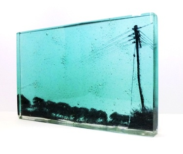

Artists exhibiting with 4 Impressions at Chelsea Art Fair 27-30 April 2017
Rose Arbuthnot’s heads began with a huge portfolio of drawings done on a residency in Oaxaca in Mexico.She disguises her classical drawing training in bold simplicity. “Drawing is simple ”she says “colour is complex and symbolic.”The heads are loaded in energy, history, ambiguity and mirrors.
Rose studied at Byam Shaw and Princes Trust Drawing school.

Antonia Bruce studied Fine Art at Newcastle Polytechnic.
She began her creative practice as an independent film maker and a founder member of London Video Arts.
After an early career as a film editor with the BBC she now works on differing conceptually led projects.
From a base of drawing at the centre of her practice, the work can vary from dialogues around votive art to
pinhole photography and crop growing.
Horse Latitudes, the titles of a solo shows explores
movement, through long exposures with pinhole cameras of wild horses.
Antonia has exhibited her work widely and has work in public collections including: The Wellcome Collection,
Forbes Foundation, New York, The Princes Drawing School, The Institute of Contemporary Art and Ferenc Czak, Kormandi Gallery, Budapest.
.jpg)
Susan Moxley's fine art work is bold and direct in style, and usually carries a narrative. Her influences are topical and current. Although her work appears playful and light hearted it is embedded with a serious, more thoughtful message.
While print is her core medium she is constantly experimenting with different media, and new ways of expression.
She has completed stained glass commissions for schools and museums as well as domestic settings, illustrated jacket covers and children’s books. She designs and makes silver jewellery and exhibited her paintings and prints extensively.

Alison Munby carves marble and local stone, sculpting with respect to its geological formation, expressing her response to nature in physical form.

Jennifer Newman's philosophically explains: "My work is based on our journey of life, its layers and strata. Through time and pressure beauty is created. we mine the soul to find the precious things. Life refines and polishes our history and the choices we have made. Our layers and compartments are filled with experiences and memories. My study of clay has influenced all my art in the use of texture and form."
Jennifer studied Ceramic Design and Sculpture in South Africa before moving to UK. Her work is found in private collections, corporate headquarters, luxury hotels and super yachts in Europe, Russia, Japan, the Middle East, USA ,Fiji and South Africa, and is also represented in UK galleries.

Helen Slater’s works in multi layered fused glass, capturing her image within the layers to create fascinating 3D effect.
She has exhibited her work in galleries around the country, completed several public commissions and is completing a PHD at The Royal College of Art, London.

Crabby Taylors creates supurb, unique raku ceramics.
She says "Clay is more than just a material to me, it is the fabric of our history and life passed. I employ the simplest techniques, thousands of years old, dating back to our first vessels which fundamentally evolved our way of living. I hand build using various clays to give texture and colour. I fire using a range of techniques including Raku, Saggar and Smoke Firing which deliver unique markings to each piece. Through these vessels we make connections, expressing emotion and a shared dialogue."

Clare Bassett is a painter and printmaker based in London and Gloucestershire. Her work ranges from solid, monolithic female forms to vibrant, gestural works created from responses to the movements and shapes of live dance. She has exhibited nationally and internationally for over thirty years.
DYLAN BOWEN
STEVEN GREGORY
CAROLYN HORTON
MANIA SCOTT
SUSAN ROSENBERG